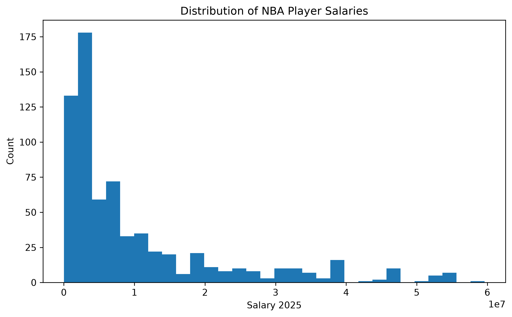
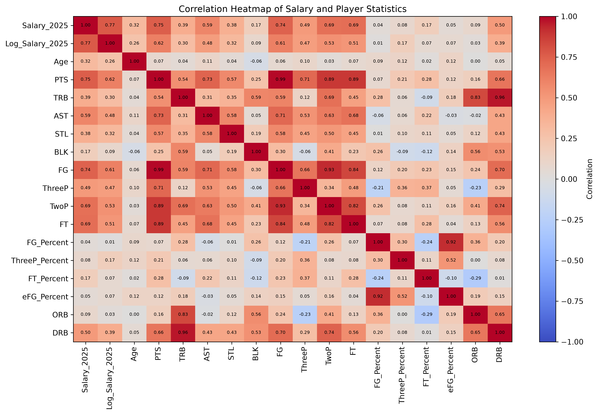
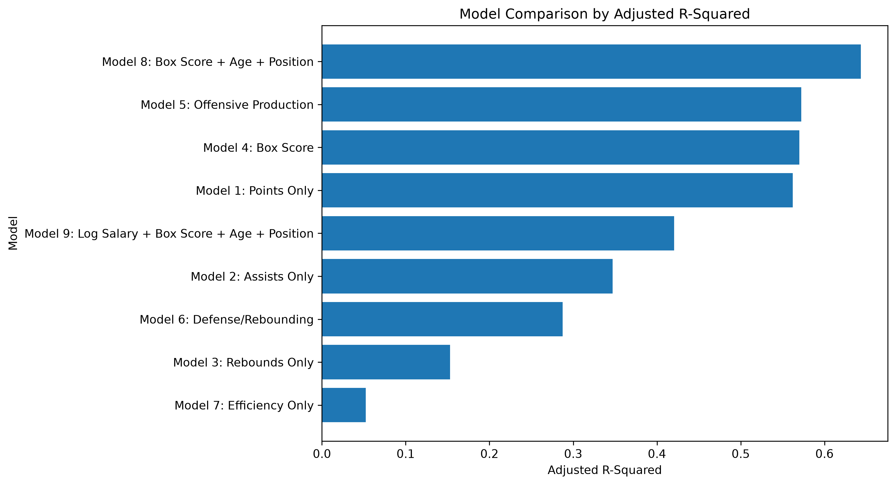
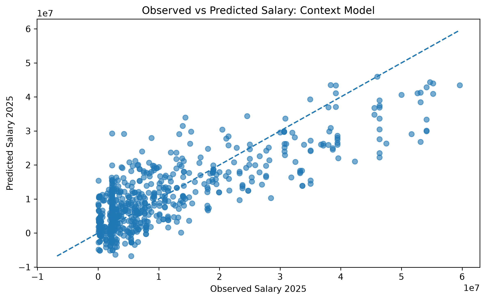
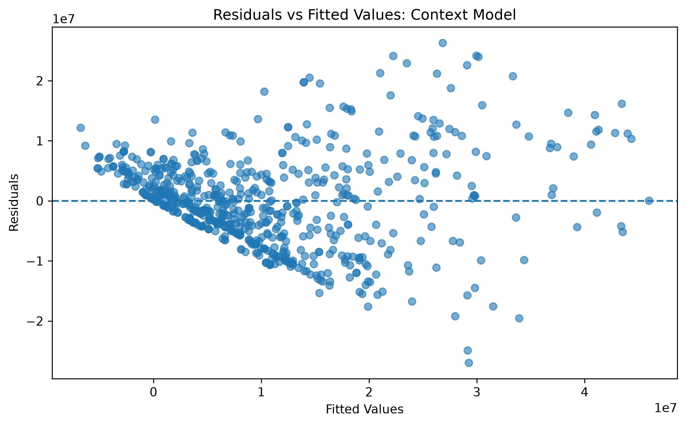
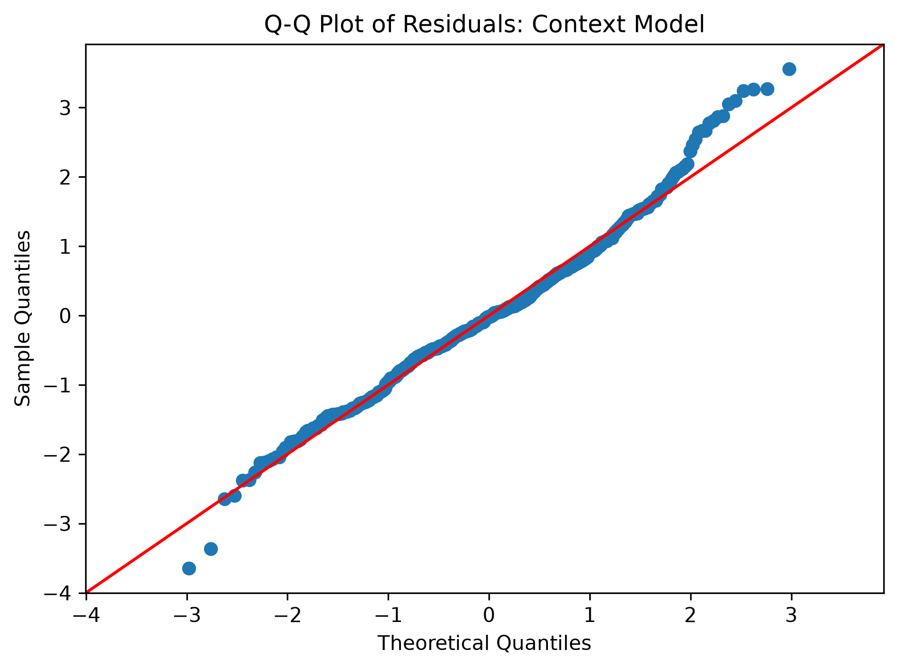

Project Overview
The project merges NBA salary data with player statistics using a player identifier, cleans salary fields, creates a log-salary variable, and evaluates models ranging from single-stat baselines to a broader specification containing box-score production, age, and position.
The strongest raw-salary model is Model 8: Box Score + Age + Position, with an adjusted R² of about 0.643. Points alone also explain a substantial portion of salary variation, while the efficiency-only specification is much weaker.
Model Comparison
| Model | Response | R² | Adj. R² |
|---|---|---|---|
| Box Score + Age + Position | Salary | 0.649 | 0.643 |
| Offensive Production | Salary | 0.577 | 0.572 |
| Box Score | Salary | 0.573 | 0.570 |
| Points Only | Salary | 0.563 | 0.562 |
| Log Salary + Box Score + Age + Position | Log Salary | 0.429 | 0.421 |
| Assists Only | Salary | 0.348 | 0.347 |
| Defense/Rebounding | Salary | 0.291 | 0.288 |
| Rebounds Only | Salary | 0.154 | 0.153 |
| Efficiency Only | Salary | 0.058 | 0.052 |
Note: information criteria such as AIC/BIC should be compared only among models with the same response variable; the log-salary model uses a different response scale.
Key Visualizations






Repository
Run the entire analysis from the repository root with python main.py. The script reads the raw files from data/raw/ and automatically writes processed datasets, regression summaries, model comparisons, and figures to their corresponding output folders.